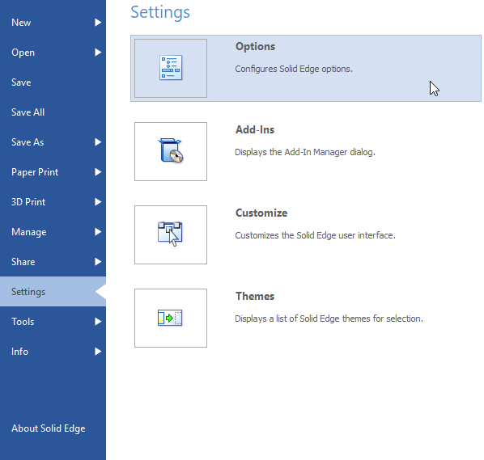

Open the Solid Edge Options dialog box
You can use the many settings on the multi-page Solid Edge Options dialog box to customize Solid Edge. You can change such things as edge display, inter-part linking behavior, assembly component behavior, mouse behavior, annotation settings, whether to use dimension style-mapping, how managed documents are opened and closed, default document location, and display colors. To learn about the controls on any page in the dialog box, click the Help button on that page.
Not all options are available in all environments.
-
Click the File tab, which is located at top-left in the application window.
-
Click the Settings tab.
-
Click the Options button.

You can return to the Solid Edge document view by clicking the File tab.